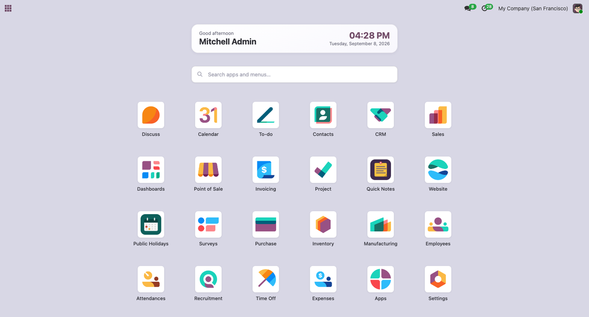
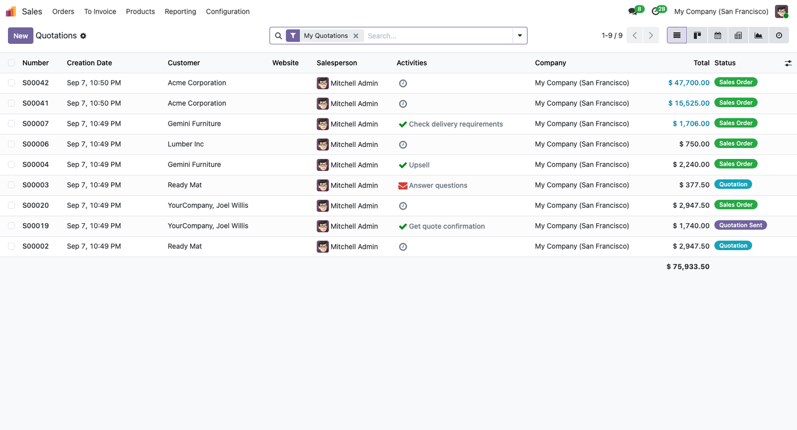

A full-page app launcher for Odoo, with instant search
Odoo Community lists your apps in a narrow dropdown. This module replaces it with a full page: every app as a large icon, and a search box that filters apps and the menus inside them as you type.

The home screen: a greeting, the time, and every app you can open.

Inside an app the top bar turns white, and the launcher button carries that app's icon — hover it to swap in the grid icon and go back.
Every app at a glanceLarge icons on a full page instead of a cramped list. Users see exactly the apps their access rights allow. |
Search that reaches menusTyping invoice finds the Invoicing app and the Customer Invoices menu inside it. Two levels deep, so results stay readable. |
Keyboard firstThe search box is focused on open. Arrow keys move, Enter opens, Escape closes. Your hands never leave the keyboard. |
| Nothing to configure | Install and it works. No settings page, no data to prepare. |
| No server load | No model, no scheduled action, no extra query. The launcher reuses the menu data Odoo already loads. |
| Reversible | The standard dropdown is hidden with CSS, never removed. Uninstalling restores Odoo exactly as it was, with no leftover data. |
| Light and dark | Both themes are designed, following the viewer's system setting. Motion stops when the system asks for reduced motion. |
| Compatibility |
Odoo 17.0, 18.0 and 19.0 — Community and Enterprise.
Depends on the web module only.
|
| Data privacy | Everything runs inside your own Odoo. The module makes no network calls and sends no data anywhere. |
Questions or a bug to report? Write to ferhatmuhamad221@gmail.com
A full installation and troubleshooting guide ships inside the module's README.